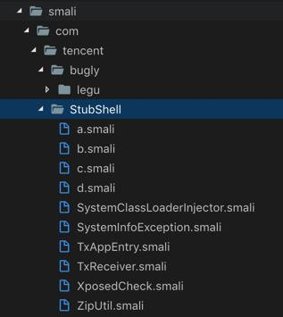
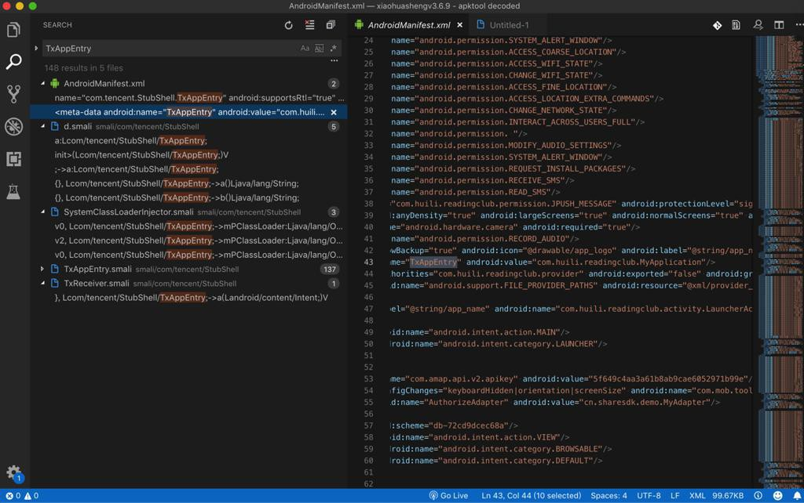

如何判断哪家加固方案
通过反编译工具后，从dex或jar包的目录结构，以及相关的文件（比如AndroidManifest.xml）的内容，往往可以看出是哪家的加密方案：
腾讯乐固加密后的目录结构和典型内容
腾讯的乐固legu加密加壳后的apk，（去用apktool）反编译后得到的jar包的典型目录结构是：
- 图
- 


- 文字
- 核心文件夹
- com
- tencent
- bugly
- legu
- crashreport
- proguard
- legu
- StubShell
- TxAppEntry
- bugly
- tencent
- com
- 详细的目录结构和文件
➜ tencent ll total 0 drwxr-xr-x 12 crifan staff 384B 3 14 13:39 StubShell drwxr-xr-x 3 crifan staff 96B 3 14 13:39 bugly ➜ tencent tree . . ├── StubShell │ ├── SystemClassLoaderInjector.smali │ ├── SystemInfoException.smali │ ├── TxAppEntry.smali │ ├── TxReceiver.smali │ ├── XposedCheck.smali │ ├── ZipUtil.smali │ ├── a.smali │ ├── b.smali │ ├── c.smali │ └── d.smali └── bugly └── legu ├── Bugly.smali ├── BuglyStrategy$a.smali ├── BuglyStrategy.smali ├── CrashModule.smali ├── a.smali ├── b.smali ├── crashreport │ ├── BuglyHintException.smali │ ├── BuglyLog.smali │ ├── CrashReport$CrashHandleCallback.smali │ ├── CrashReport$UserStrategy.smali │ ├── CrashReport.smali │ 。。。 │ └── inner │ └── InnerAPI.smali └── proguard ├── a.smali ├── 。。。 └── z.smali 14 directories, 123 files ➜ lib tree . . ├── arm64-v8a │ ├── libBugly.so │ ├── libgifimage.so │ ├── libimagepipeline.so │ ├── libjcore119.so │ ├── libshella-2.9.1.2.so │ └── libstatic-webp.so ├── armeabi │ ├── libBugly.so │ ├── libgifimage.so │ ├── libimagepipeline.so │ ├── libjcore119.so │ ├── libshella-2.9.1.2.so │ ├── libstatic-webp.so │ ├── mix.dex │ └── mixz.dex ├── armeabi-v7a │ ├── libBugly.so │ ├── libgifimage.so │ ├── libimagepipeline.so │ ├── libjcore119.so │ ├── libshella-2.9.1.2.so │ └── libstatic-webp.so ├── 。。。 7 directories, 36 files
- 核心文件夹

反编译出的AndroidManifest.xml内容：
<application android:allowBackup="true" android:icon="@drawable/app_logo" android:label="@string/app_name" android:name="com.tencent.StubShell.TxAppEntry" android:supportsRtl="true" android:theme="@style/AppTheme">
<meta-data android:name="TxAppEntry" android:value="com.huili.readingclub.MyApplication"/>
中有：
android:name="com.tencent.StubShell.TxAppEntry"- 其中有：
com.tencent.StubShell.TxAppEntry
- 其中有：
<meta-data android:name="TxAppEntry"
以及，多处都可以搜到：TxAppEntry

都是典型的腾讯乐固的相关内容。
360加固保的加固的目录结构
360加固后的apk经过dex2jar反编译后的目录结构是：


com.qihoo.utilcom.qihoo360.replugincom.stub
这种结构就说明是360加固保加固的。